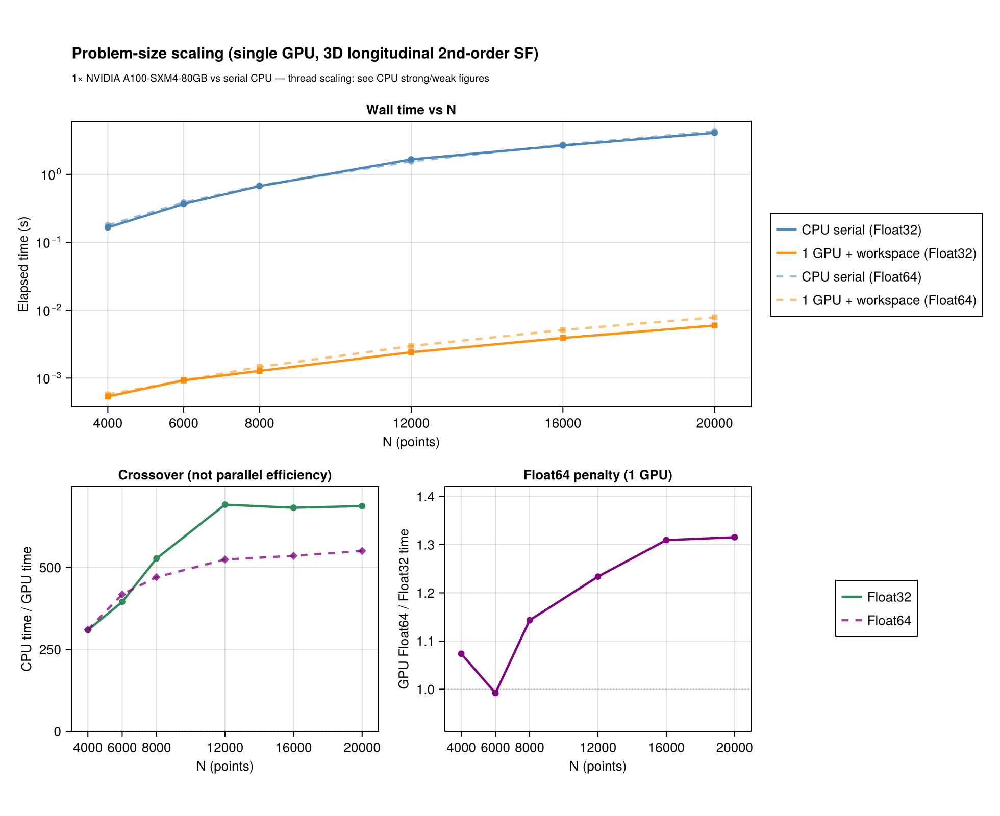
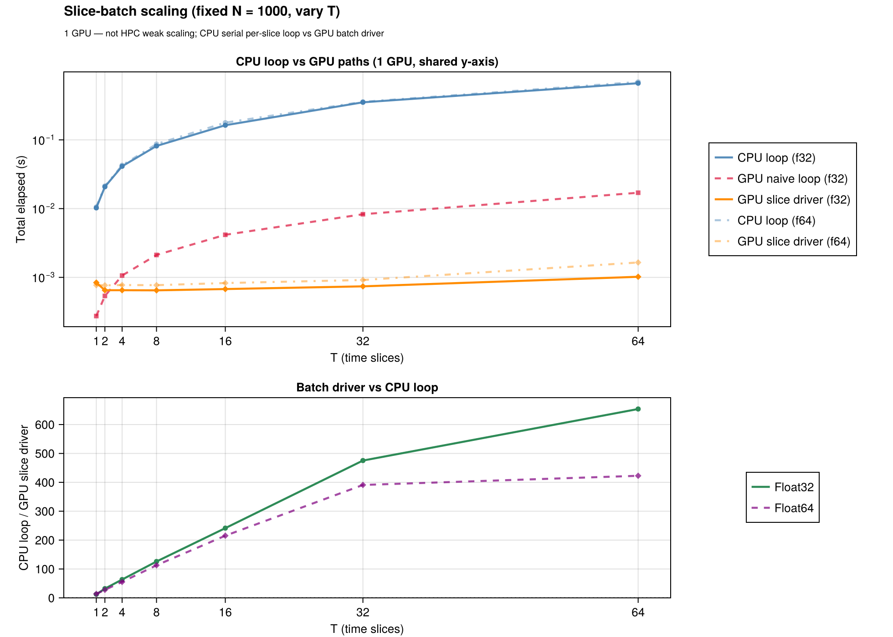

GPU acceleration
The device kernels live in the StructureFunctionsKernelAbstractionsExt extension (loaded with using KernelAbstractions); using CUDA adds the CUDA launch configuration. Every device route is also run on KernelAbstractions.CPU(), which executes the same kernel source on the host and is how the default test suite covers the kernels without a device. CUDA is the tested hardware.
For backend selection across serial / threaded / distributed / GPU see Backends; the CUDA validation and benchmark scripts are in the repository's gpu/ directory.
When to use the GPU
- Problem size. Pair histograms pay off from a few thousand points up; the crossover depends on the hardware. Below it the threaded CPU backend wins.
- Memory. Device arrays use the layout
(D, N)or(D, N, T)for batches.Float32is faster on the device;Float64is supported and is what the parity tests compare. - Not a drop-in speedup on the CPU. Without a GPU,
KA.CPU()runs the same kernels on the host and is slower thanThreadedBackend().
Point lists
using StructureFunctions: Calculations as SFC, StructureFunctionTypes as SFT
using ComputationalBackends: ComputationalBackends as CB
using KernelAbstractions, CUDA
x = CUDA.CuArray{Float32}(rand(Float32, 3, 20_000))
u = CUDA.CuArray{Float32}(rand(Float32, 3, 20_000))
bins = collect(Float32, range(0.0f0, 1.5f0; length = 21))
res = SFC.calculate_structure_function(SFT.L2SFType(), x, u, bins; backend = CB.GPUBackend(CUDA.CUDABackend()))distance_bins must have the element type of x and u; the device API casts nothing silently. The joint value-binned histogram (value_bins), the six single-pass invariants and the batches over auxiliary axes take the same backend keyword.
GPUSFWorkspace — reuse device histogram buffers
Repeated calls with one bin layout reuse a workspace, which avoids reallocating the device histogram buffers on every launch:
ws = SFC.GPUSFWorkspace(CUDA.CUDABackend(), bins)
for _ in 1:10
SFC.gpu_calculate_structure_function(SFT.L2SFType(), CUDA.CUDABackend(), x, u, bins; workspace = ws)
end
SFC.release!(ws)Time series — the batch drivers
For T snapshots stack the data as (D, N, T), upload once and call the batch driver, which keeps the batch on the device and synchronises once:
x_batch = rand(Float32, 3, N, T)
u_batch = rand(Float32, 3, N, T)
sums = zeros(Float32, length(bins) - 1, T)
counts = zeros(UInt32, length(bins) - 1, T)
SFC.calculate_structure_function_batch!(sums, counts, SFT.L2SFType(), x_batch, u_batch, bins;
backend = CB.GPUBackend(CUDA.CUDABackend()))The batch entries — calculate_structure_function_batch!, calculate_structure_function_2d_batch!, calculate_structure_functions_single_pass_batch!, calculate_structure_functions_single_pass_2d_batch! — dispatch on the backend; the CPU backends run them too.
Route table for point lists
| call | shapes | D | bins | device route |
|---|---|---|---|---|
calculate_structure_function(sf, x, u, bins; backend) | (D, N) | 2, 3 | linear, log, general | tiled pair blocks with a block-local histogram |
| shared positions | x::(D, N), u::(D, N, aux...) | 2 (fused), any | linear for the fused route | fixed-position batch kernels |
| varying positions | x, u::(D, N, aux...) | 2 (fused), any | linear for the fused route | varying-position batch kernels |
calculate_structure_function(sf, x, u, bins, value_bins; backend) | (2, N) or batches | 2 | typed or vector value bins | shared-memory joint histogram when it fits, global atomics otherwise |
calculate_structure_functions_single_pass(x, u, bins; backend) | (D, N) or batches | 2, 3 | linear, log, general | tiled six-row histogram |
calculate_structure_functions_single_pass_2d(x, u, bins, value_bins; backend) | (D, N) or batches | 2, 3 | typed or vector value bins | shared, type-plane or direct strategy, frozen when the workspace is built |
calculate_structure_function_tensor(order, x, u, bins; backend) | (D, N) or shared positions | flat and spherical | any | one thread per point, global atomics per tensor component (orders 2 and 3) |
D = size(u, 1) is the velocity width and N = size(x, 2) = size(u, 2); trailing axes are independent auxiliary calculations.
Grids: the transform engine on a device
The gridded transform takes the hardware from the same backend keyword. With using FFTW: FFTW (or another AbstractFFTs implementation) and using KernelAbstractions: KernelAbstractions, a GPUBackend moves the masked, weighted monomials to the device, takes their transforms there through the device's own AbstractFFTs implementation, forms every inverse column of a batch of slab pairs in one kernel, and bins every lag of every slab pair in a second kernel with a privatized histogram. Uniform, stretched and lat-lon grids, masks, weights, multi-fields, every polynomial order, the joint histogram over angle and the soft-binned non-uniform FFT route run through it; the counts are exactly the CPU engine's.
using FFTW, FlowGeometries
using SpectralBackends: SpectralBackends as SB
sf = calculate_structure_function(SFT.L3SFType(), grid, u, bins, SB.FastFourierTransformSpectralBackend();
backend = CB.GPUBackend(CUDA.CUDABackend()))AutoSpectralBackend() on a device always takes the transform, since the direct lag sweep has no device method. On an A100 the 720×360 lat-lon L2 transform runs 28× faster than the 8-thread CPU (0.045 s against 1.28 s), and a stretched 256×128 grid 3.6× (0.0027 s against 0.0098 s).
A schedule with many slabs transforms many short monomials, so the number of operations rather than their size sets the cost. Each monomial is built for every slab in one broadcast, the slabs are transformed in one batch, and the spectra are laid out in the order the spectral kernel reads them, so assembling its input is a reshape rather than a copy per spectrum.
The binning kernel launches each slab pair over the lags that pair can reach, the same box the host loop takes. On a lat-lon grid a parallel spans less distance the nearer it lies to a pole, so the box over all row pairs stays as wide as the equator's however small the largest bin edge is; a schedule that reports uniform_lag_box instead shares one box across every pair and is indexed by division.
Single-type joint 2D shared memory
GPUSFWorkspace for kind = :joint2d defaults to the exact compile-time shared histogram width n_dist × n_val; joint2d_compile_cells = joint2d_smem_max() or joint2d_smem_align256(n_dist, n_val) override it.
Six-invariant single-pass 2D
The device path for calculate_structure_functions_single_pass_2d! with typed distance bins (LinearBinEdges / LogBinEdges) and GPUSFWorkspace(...; kind = :single_pass_2d) picks its histogram strategy — :shared, :typeplane or :direct — when the workspace is built, from a 48 KiB shared-memory budget. The six rows are S2, L2, T2, S3, L3, L1T2; the basis-dependent T3 and L2T1 are not part of the single-pass contract and take the general entries with their transverse convention.
Testing tiers
| tier | command | what it proves |
|---|---|---|
| default suite | julia --project=test test/runtests.jl | kernel arithmetic, binning, workspaces and slices on KA.CPU(), the same kernel source without CUDA |
| CUDA | julia --project=gpu gpu/runtests.jl | every CUDA suite: point kernels, workspaces, 1-D and 2-D parity, end-to-end 2-D, slices, and the gridded engine's parity table (skipped when !CUDA.functional()) |
| gridded parity table | sbatch gpu/run_cuda_gridded_parity.sh | counts exact and sums to round-off against the 8-thread CPU on every schedule, the non-uniform FFT route and the tensor kernel, with timings |
| benchmarks | julia --project=gpu gpu/benchmark_suite.jl | release-performance gates and timing JSON |
KA.CPU() does not prove CUDA correctness: five device-only compile faults (a runtime-length tuple, a boxed capture, a runtime-value branch, an @index inside a branch, a formatted throw message) and two CUDA library accuracy issues were found only on the device, which is why the CUDA tier exists.
Benchmarks and figures
The GPU figures in the README are problem-size scaling — one device against the serial CPU, sweeping N, and one device sweeping the slice count T — not strong or weak scaling. They are regenerated on a GPU allocation with gpu/collect_benchmark_assets.jl followed by docs/generate_assets/generate_gpu_figures.jl; the parity figure (KA.CPU() against serial) with docs/generate_assets/generate_assets.jl. CPU thread scaling is in benchmark/benchmark_scaling.jl.


Examples
examples/gpu_acceleration.jl— a single snapshot with a workspaceexamples/gpu_time_slices.jl— the slice batch against a naive loop